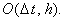
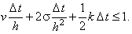
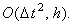
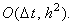

|
В заключение приведём сравнительную характеристику разностных схем,
аппроксимирующих одномерное дифференциальное уравнение параболического типа, содержащее производную по
координате первого порядка:
1. Явная разностная схема
Имеет порядок аппроксимации 
Условно устойчива 
Решается с помощью рекуррентного соотношения (6.4).
2. Неявная разностная схема
Имеет порядок аппроксимации
Абсолютно устойчива.
Решается методом прогонки.
3. Разностная схема Кранка-Николсона
Имеет порядок аппроксимации 
Абсолютно устойчива.
Решается методом прогонки.
Напомним, что в случае v < 0 для аппроксимации
производной по координате первого порядка следует использовать правую конечную разность.
Вне зависимости от знака параметра v (или в случае,
когда v является знакопеременной величиной) может быть также использована
неявная разностная схема с аппроксимацией производной по координате первого порядка
центральной конечной разностью
Имеет порядок аппроксимации 
Абсолютно устойчива.
Решается методом прогонки, сходящейся при выполнении одного из условий: (6.9) или (6.10).
|